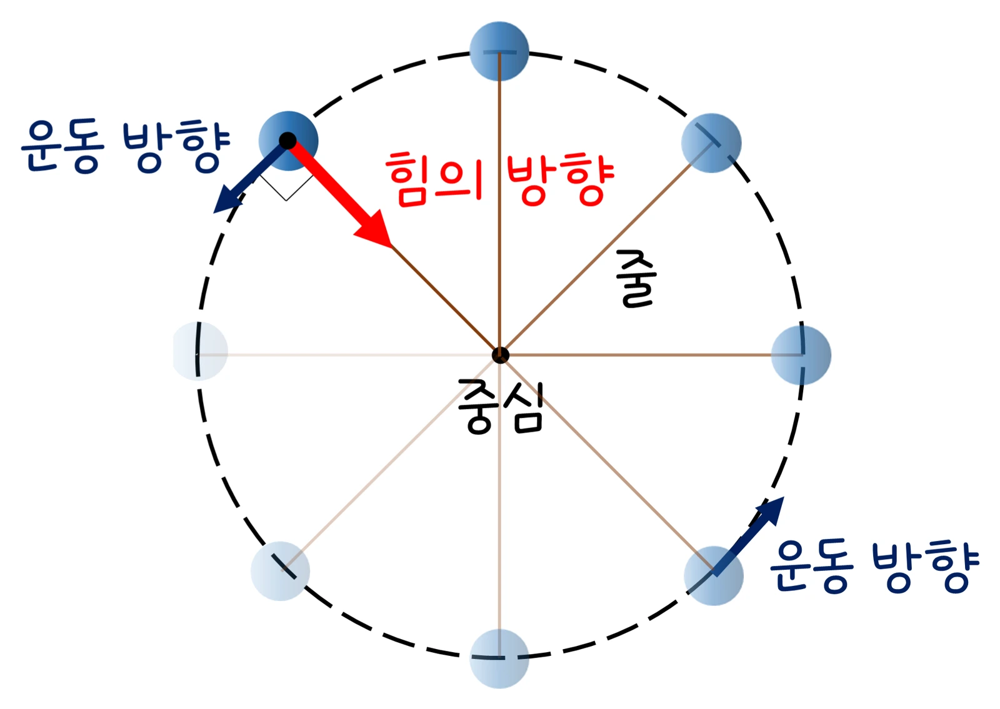

고3 역학과 에너지 · Ⅰ 시공간과 운동 · 웹툰 3화 「커브길의 비밀」
실험에서 실에 매단 물체의 질량 m, 반지름 r, 주기 T를 바꿔 가며 힘 센서(0.01 N)로 실의 장력을 재고 mv²/r와 비교했습니다. F는 m과 r에 비례, 1/T²에 비례해 세 그래프가 모두 원점을 지나는 직선이었고, 주기를 절반으로 하면 힘은 4배였습니다. 구심 가속도와 구심력, 커브길의 원리를 정리합니다.
실험 데이터 되짚기
기준: m = 0.2 kg, r = 0.6 m, T = 1.0 s. 수평판 마찰과 실의 질량은 무시했습니다.
| 조건 | m (kg) | r (m) | T (s) | v (m/s) | 구심력 F (N) | 기준 대비 |
|---|---|---|---|---|---|---|
| 기준 | 0.2 | 0.6 | 1.0 | 3.77 | 4.74 | 1배 |
| 주기 절반 | 0.2 | 0.6 | 0.5 | 7.54 | 18.95 | 4배 |
| 반지름 2배 | 0.2 | 1.2 | 1.0 | 7.54 | 9.47 | 2배 |
| 질량 2배 | 0.4 | 0.6 | 1.0 | 3.77 | 9.47 | 2배 |
| 주기 2배 | 0.2 | 0.6 | 2.0 | 1.88 | 1.18 | 1/4배 |
F–1/T², F–m, F–r(T 고정) 그래프가 모두 원점을 지나는 직선. 반지름 2배(같은 주기)면 속력도 2배가 되어 v²/r는 2배입니다. 각속도 ω = 2π/T로 쓰면 a = rω², F = mrω².
힘이 운동 방향과 같으면 속력 증가, 반대면 감소, 수직이면 속력은 그대로이고 방향만 바뀝니다. 힘이 운동 방향과 수직으로 계속 작용하면 원을 그리는 등속 원운동. 속력이 일정해도 방향이 바뀌면 속도가 변하므로 가속도가 있고, 그 방향은 항상 원의 중심(구심 가속도), 크기 a = v²/r = 4π²r/T². 이 가속도를 만드는 힘이 구심력 F = mv²/r = 4π²mr/T² — 별도의 새 힘이 아니라 중심을 향하는 알짜힘의 이름이며 실의 장력·마찰력·중력·전기력 등이 그 역할을 합니다. 예측 게임 — 줄이 끊어지면 공은? 뭉치 ‘바깥쪽으로 튕겨 나간다’, 제로 ‘당기던 힘이 사라지니 그 순간 방향 그대로, 접선 방향’: 바깥으로 끌어당기는 힘은 없고 관성에 따라 직진합니다.
교재 그림
등속 원운동 — 힘은 중심으로, 운동은 접선으로

힘(줄의 장력)은 언제나 중심을 향하고 운동 방향과 수직이라 속력은 그대로, 방향만 바뀝니다.
움직여 보기
줄에 매단 공 — 힘은 중심으로, 속도는 접선으로
빨강 F(구심력)는 늘 중심을, 파랑 v(속도)는 늘 접선을 향해 서로 수직입니다. 주기를 절반으로 하면 F는 4배, 반지름이나 질량을 2배로 하면 2배 — 표 1과 맞춰 보세요. 돌리다가 ‘줄 끊기’를 누르면 공은 바깥이 아니라 접선 방향으로 날아갑니다. (위에서 본 모습, 마찰 무시)
평평한 커브길에서는 타이어 마찰력이 구심력: 속력 20 m/s(72 km/h), 반지름 50 m → 필요한 구심 가속도 20² ÷ 50 = 8 m/s² → μ ≥ 0.8. 빗길에서 마찰 계수가 줄면 이 속력으로는 바깥으로 미끄러지고, 속력이 2배면 필요한 구심력은 4배라 커브 앞 감속 표지판이 있습니다. 고속도로 커브는 바깥쪽을 조금 높게 기울여(뱅크) 수직항력의 성분도 구심력에 보탭니다. 스마트폰 가속도 센서로 회전 그네를 타면 v²/r로 계산한 값과 센서 값을 비교할 수 있습니다. 인공위성은 중력이, 세탁기 탈수통 속 빨래는 통 벽의 힘이, 코너를 도는 육상 선수는 몸을 안쪽으로 기울여 지면 반력의 수평 성분이 구심력입니다. 달을 당기는 구심력은? — 그 질문으로 뉴턴은 중력을 찾아냈습니다(4화).
움직여 보기
커브길 — 마찰력이 구심력을 대 줄 수 있을까?
20 m/s(72 km/h)로 반지름 50 m를 돌려면 20² ÷ 50 = 8 m/s²가 필요해 μ ≥ 0.8이어야 합니다. μ를 빗길처럼 0.5로 낮추거나 속력을 올려 보세요 — 보라 막대가 초록 막대를 넘으면 차는 더 큰 원을 그리며 바깥으로 밀려납니다. (평평한 길, g = 10 m/s², 위에서 본 모습)
수평판 마찰과 실의 질량을 무시했습니다. 실제로는 마찰이 속력을 줄이고 실이 조금 처져 장력의 수평 성분만 구심력이 됩니다(원뿔 진자). 손으로 돌리면 주기가 일정하지 않고 실이 늘어나면 반지름이 변하므로 실험에서는 여러 바퀴의 시간을 재서 평균 주기를 씁니다. 원심 분리기는 큰 회전 속력으로 무거운 성분을 바깥으로 모읍니다 — 바깥으로 ‘힘’이 있어서가 아니라 구심력이 부족한 입자가 직진하려 하기 때문입니다.
0.2 kg·0.6 m·1.0 s → v 3.77 m/s, F 4.74 N · T 절반 → F 4배 · 커브 20 m/s·50 m → 8 m/s², μ ≥ 0.8
“3라운드! 줄이 끊어지면 공은 어느 쪽으로 날아갈까? 난 바깥쪽! 원 밖으로 튕겨 나가니까.” “끊어진 순간 공을 원 쪽으로 당기던 힘이 사라지니까, 그 순간 움직이던 방향 그대로 곧게 날아가겠지. 원의 접선 방향!”
웹툰 3화 · 슬로 모션: 공이 접선 방향으로 곧게 — 제로 2 : 1 뭉치
“속력이 일정해도 방향이 바뀌니까 가속도가 있어. 그 방향은 원의 중심이고, 크기는 v²/r이야. 이 가속도를 만드는 알짜힘이 구심력이지.” “빗길에서 마찰 계수가 줄면 이 속력으로는 커브를 못 돌고 바깥으로 미끄러지겠네요.”
웹툰 3화 · 속력이 2배면 필요한 구심력은 4배
μmg ≥ mv²/r → v ≤ √(μgr) = √(0.5 × 9.8 × 80) = 19.8 m/s ≈ 71 km/h. 빗길에서 μ = 0.25가 되면 14 m/s(50 km/h)로 줄어듭니다.
v = 2π × 5 ÷ 8 = 3.93 m/s → a = 3.93² ÷ 5 = 3.1 m/s²(약 0.3 g). 센서는 중력 9.8과 이 값의 벡터 합 약 10.3 m/s²를 읽습니다.